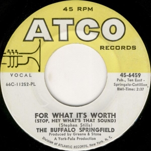

Day 13

Buffalo Springfield - For What It's Worth - 1966
我第一次听到这首歌是在《战争之王》里，是电影的片头曲。
There's something happening here
What it is ain't exactly clear
There's a man with a gun over there
Telling me I got to beware
I think it's time we stop, children, what's that sound
Everybody look what's going down
There's battle lines being drawn
Nobody's right if everybody's wrong
Young people speaking their minds
Getting so much resistance from behind
It's time we stop, hey, what's that sound
Everybody look what's going down
What a field-day for the heat
A thousand people in the street
Singing songs and carrying signs
Mostly say, hooray for our side
It's s time we stop, hey, what's that sound
Everybody look what's going down
Paranoia strikes deep
Into your life it will creep
It starts when you're always afraid
You step out of line, the man come and take you away
We better stop, hey, what's that sound
Everybody look what's going down
Stop, hey, what's that sound
Everybody look what's going down
Stop, now, what's that sound
Everybody look what's going down
Stop, children, what's that sound
Everybody look what's going down